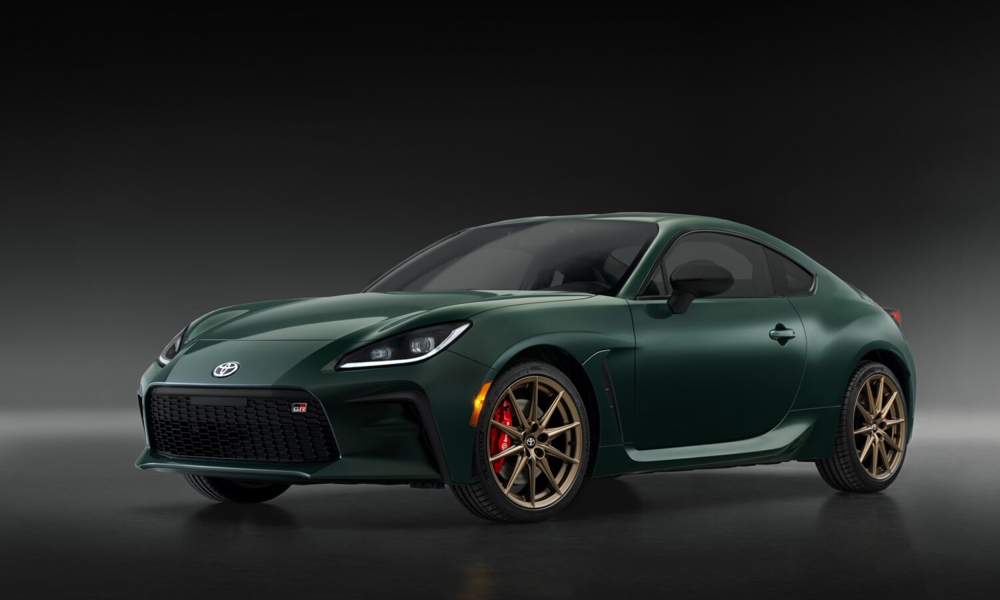
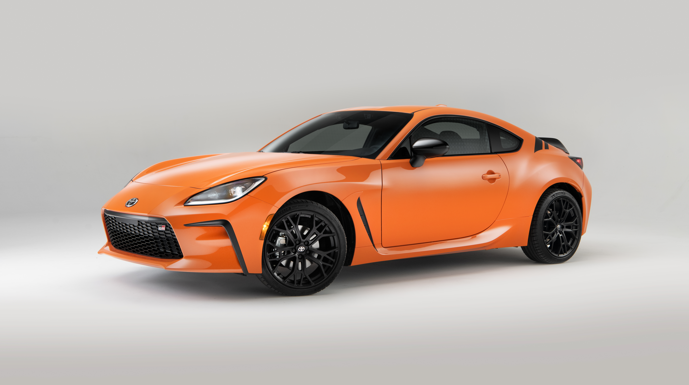
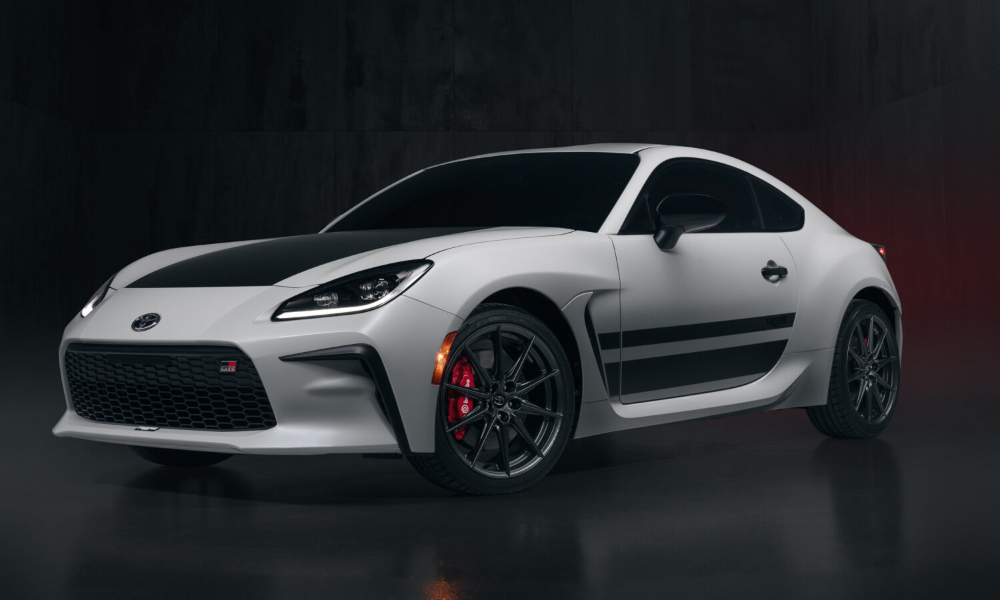

Price: ₱2,023,863.14
A blast from the past is returning for the 2025 model year. Paying tribute to the Hakone Turnpike in Japan, not far from Tokyo, Toyota is reintroducing the GR86 Hakone special edition. Born to hit the streets in style, the GR86 Hakone special edition is sure to turn heads with its bold Ridge Green exterior color.
Download PDF information
Buy Now
Price: ₱2,2,856,000.00
The second generation GR86 is built on the reputation of the first-gen model by bringing even more affordable sports car fun with a higher powered 2.4-liter powerplant that yields nearly 11% more horsepower and 18% more torque than the previous 2.0-liter engine. It also ups handling precision with a 50% increase in chassis stiffness over the prior-gen 86. Drivers can also choose their thrill and opt for 6-speed automatic with paddle shifted 6-speed manual transmission. For 2023, GR86 adds a limited production 860- special edition with an exclusive Solar Shift paint color, forged matte black 18-inch alloy wheels, GR cat-back exhaust, and b-pillar racing stripes.
Download PDF information
Buy Now
Price: ₱1,974,204.73
Toyota is bringing a double dose of pure driving delight to the GR86 for the 2024 model year. First up is a limited GR86 TRUENO Edition with a throwback two tone look that will come in a choice of Halo and black or Track bRed and black. Next, a newly available Performance Package with SACHS Dampers and Brembo Brakes comes as standard equipment on the TRUENO Edition and will be available as an upgrade package for GR86 models.
Download PDF information
Buy Now